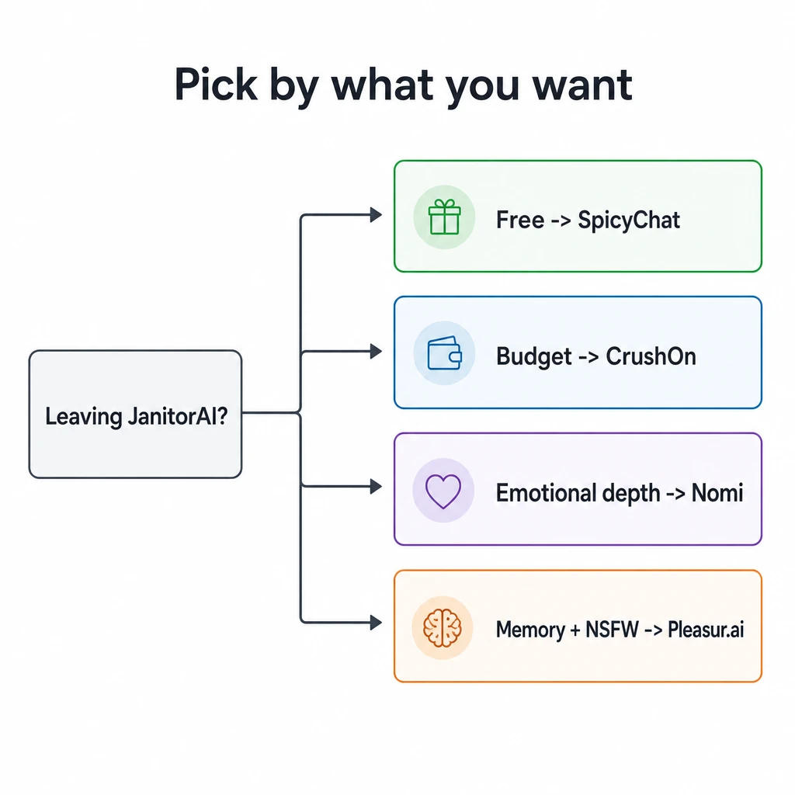
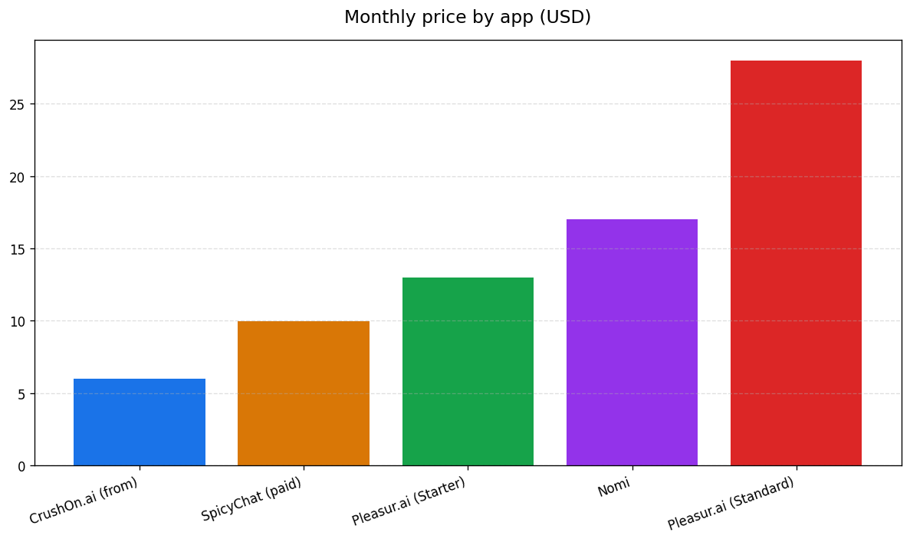

Best JanitorAI Alternatives in 2026
The best JanitorAI alternatives in 2026 are SpicyChat for a genuinely free option, CrushOn.ai on a budget, Nomi for emotional depth, and Pleasur.ai for strong memory plus adult chat with pricing you can actually read. Pick by what you want, not by which app makes the loudest promises.
JanitorAI's April 2026 age-verification rollout sent its own subreddit looking for the exit. The replacement lists mostly read the same — ten apps, a few badges, not much honesty. This one is different. You get the shortlist, a clean comparison, a fair verdict on each app, and answers to the questions people actually ask.

What changed at JanitorAI in 2026
In April 2026, JanitorAI made age verification mandatory: a selfie or government ID before you can chat. Users report the check often stalls partway through.
This was driven by law, not a JanitorAI whim. Australia's Age-Restricted Material Codes and Brazil's Digital ECA both landed in early 2026, and adult platforms have to respond. Most of the space is now moving the same direction.
On r/JanitorAI_Official, users describe uploads stuck on "processing," camera permissions that fail silently, and no clear way forward. Plenty of them are threatening to leave.
Here's the honest framing. An adult platform asking you to confirm you're an adult is doing its job. That part is normal and expected. The friction people hit is a rollout that doesn't work reliably, not the check itself. If you're shopping for a new home, here's the shortlist.
The best JanitorAI alternatives at a glance
Four apps cover almost everyone leaving JanitorAI. Each bullet is one app, with where it wins and where it doesn't.
- SpicyChat. Best for a free start. Memory is weak; characters forget between sessions. NSFW yes. Free tier: genuinely free. Pricing: clear, paid from around $9.99/mo.
- CrushOn.ai. Best on a budget. Memory holds up in longer chats. NSFW yes. Free tier: limited. Pricing: clear, from around $5.99/mo.
- Nomi. Best for emotional depth. Memory is excellent. NSFW yes. Free tier: limited. Pricing: clear, around $16.99/mo.
- Pleasur.ai. Best for memory plus NSFW together. Memory is strong. NSFW yes. Free tier: no full free tier. Pricing: clear and published, from $12.99/mo.
Now the honest detail on each.
SpicyChat, CrushOn.ai, and Nomi — where each one wins
If you want free, go SpicyChat; cheap and decent, CrushOn.ai; a companion that feels emotionally real, Nomi beats everyone here, including us.
SpicyChat is the strongest free option in the space. The character library is huge, and you can start without paying. The honest weakness is memory: it's short, so your character tends to forget things between sessions. For a lot of people that trade-off is fine.
CrushOn.ai is the budget pick. It holds context better than JanitorAI did across longer chats, the adult content is unrestricted within its own rules, and paid plans start low. We've covered it in depth in our CrushOn AI review if you want the full picture.
Nomi is the one to beat on feeling. If long-term emotional continuity is what you're after — a companion that remembers your life and grows with you — Nomi does that better than we do. We'd rather say so plainly than pretend otherwise.

Where Pleasur.ai fits — memory, NSFW, and honest pricing
Pleasur.ai is the pick when you want strong memory retention and adult chat in one place, with pricing you can read before you pay.
Memory is the core of it. You build a companion in the AI Companion Creator — appearance, personality, backstory — and it carries those details across sessions instead of resetting each time you log in. Independent reviewers single out memory retention as one of its strongest dimensions. You can also generate images of that companion inside the chat.
Now the pricing, stated plainly. Starter is $12.99/mo, Standard is $27.99/mo and the most popular tier, Ultimate is $49.99/mo, all listed openly on the pricing page. Yearly billing cuts the effective monthly cost, and there's a 7-day money-back guarantee.
There's no fully featured free tier. We'd rather tell you that up front than bury it.
That's the whole pitch: memory, value, and clear pricing. It's an 18+ platform, and the edge is honesty about what you get. Whichever app you pick, choose it for the right reason.
How to choose (and what to ignore)
Pick by your top priority: free, budget, emotional depth, or memory plus value. Then ignore any list selling you on shortcuts.
Decide on one axis first. Every app here is a reasonable 18+ choice once you know what matters most to you. Memory and value point to Pleasur.ai; emotional depth points to Nomi; a free start points to SpicyChat.
One more thing worth saying. Don't pick on age checks alone, because every serious adult app is heading that way. Reliability and value are the real differentiators, and that's where the choice gets made.
Our AI Companion Safety Checklist covers what to check before you commit. Best Character AI Alternatives maps the wider field.
FAQ
What is the best free JanitorAI alternative? SpicyChat. It's genuinely free with a big character library. The trade-off is short memory.
What is the best budget JanitorAI alternative? CrushOn.ai, from around $5.99/mo, with better long-chat memory than JanitorAI.
Which alternative has the best memory? Pleasur.ai if you want memory and adult chat together; Nomi if you want pure emotional continuity.
Why did JanitorAI add age verification? Regulation in markets like Australia and Brazil now requires age checks for adult content, and many apps are following.
Is Pleasur.ai 18+? Yes. It's an adult platform with transparent pricing and a responsible stance.
The honest bottom line
The best JanitorAI alternative in 2026 is the one that matches your priority: SpicyChat for free, CrushOn.ai for budget, Nomi for depth, Pleasur.ai for memory and value. Choose it on its merits, not on who promises the most.
Start with what you care about most. If you're still weighing options, our guide to the Best AI Girlfriend Apps: Choose Safely in 2026 walks through the same decision with more room to breathe.